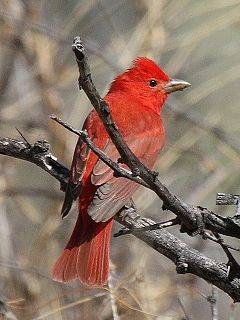
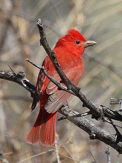

| Summer Tanager | |
|---|---|
|  | |
| Adult male | |
| Conservation status | |
| Binomial name | |
| Piranga rubra (Linnaeus, 1758) |
| Summer Tanager | |
|---|---|
|  | |
| Adult male | |
| Conservation status | |
| Binomial name | |
| Piranga rubra (Linnaeus, 1758) |
The Summer Tanager, Piranga rubra, is a medium-sized American songbird. Formerly placed in the tanager family (Thraupidae), it and other members of its genus are now classified in the cardinal family (Cardinalidae).[2] The species's plumage and vocalizations are similar to other members of the cardinal family.
Their breeding habitat is open wooded areas, especially with oaks, across the southern United States. These birds migrate to Mexico, Central America and northern South America. This tanager is an extremely rare vagrant to western Europe.
Adults have stout pointed bills. Adult males are rose red and similar in appearance to the Hepatic Tanager, although the latter has a dark bill; females are orangish on the underparts and olive on top, with olive-brown wings and tail.
These birds are often out of sight, foraging high in trees, sometimes flying out to catch insects in flight. They mainly eat insects, especially bees and wasps, and berries. Fruit of Cymbopetalum mayanum (Annonaceae) are an especially well-liked food in their winter quarters, and birds will forage in human-altered habitat[3]. Consequently, these trees can be planted to entice them to residential areas, and they may well be attracted to bird feeders. Summer Tanagers build a cup nest on a horizontal tree branch.

{kind=link}